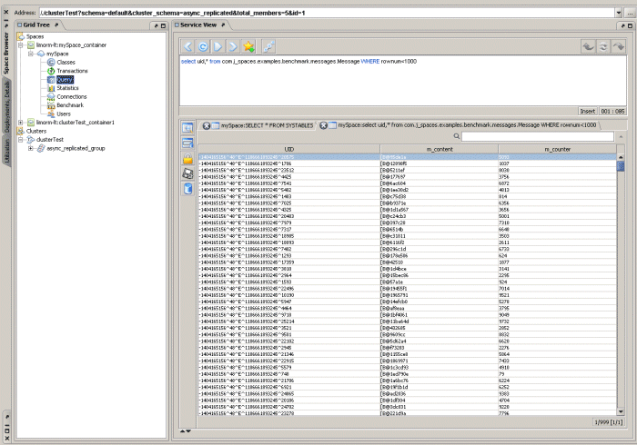
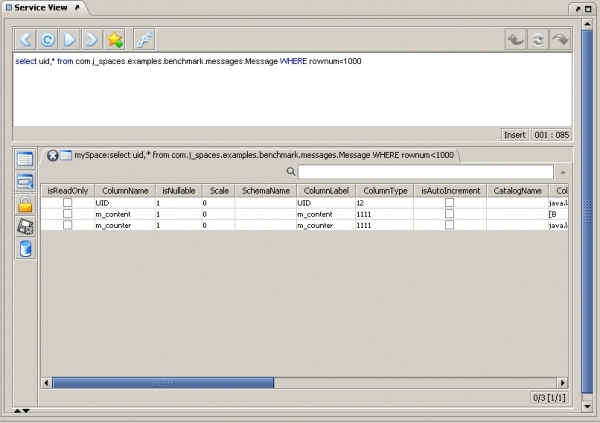
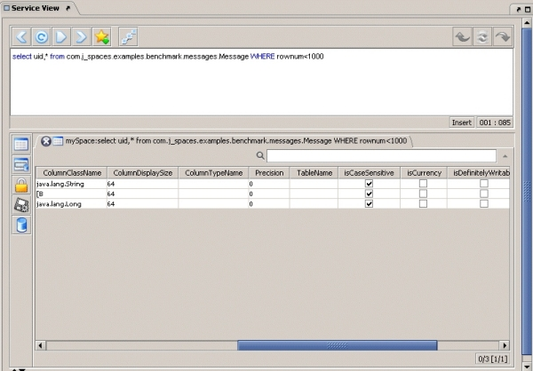
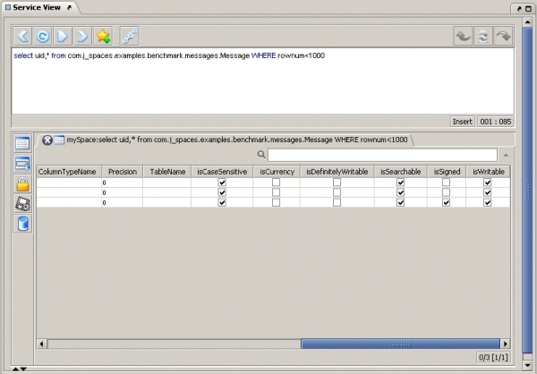
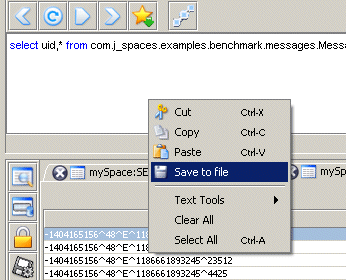

Used to query the space using SQL statements and view the resulting data set in tabular format.
The Query view allows you to query the space using SQL statements and to get the full resulting data set in tabular format.

The Query view includes the following options:
toString returned value.Make sure that the space includes the non-native attribute classes as part of its classpath, and that the relevant application has the correct codebase, so that the the query result set table can display non-native type attribute data correctly.
Exporting result set data into HTML, XML or CSV – to export the restored result set data, click the export button (). This displays the export dialog, which requires you to follow 2 simple steps, and then save the file to disk.
Entry UID is displayed for each object data – when the SQL query includes the UID as part of the select statement (select uid,\* from person), the first column in the result set table displays the Entry UID.
Space classes list query – to query the space for the classes it stores run the following query:
SELECT * FROM SYSTABLES
Class meta data information – to get the class meta data information, click the meta data button (). This displays a table in which each row includes information about the table column's meta data. This displays a translation of the relevant class attribute type into its SQL equivalent:

Scroll right to see more attributes:


SQL queries can be saved to a file. Right-click the top of the Service View panel and click Save to file:
